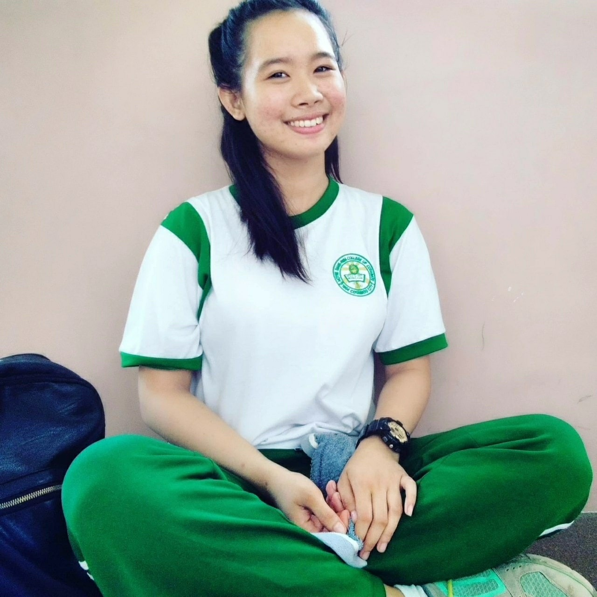

Hello My name is Joevelyn Trinidad. I am the youngest among all the four sibling. I was born on June 17, 2001.
I graduated at CCNHS MAIN-CAMPUS and now currently studying at NDCRVMCC grade 11 STEM St.Damian.
FACTS ABOUT ME!
I am happy go lucky person, sensitive jolly and emotional. When I was on my 4TH grade I diagnosed on hospital because of dengue
and starting that day my allergy triggered and until now.My mother said that I am beautiful.
LIKES
I love dogs,I like you, I must prefer rubber shoes than sandals, Ilove lose shirts and Ilove books, I love eating and sleeping I love singing and dancing .
DISLIKES
I Hate plastics, I dont like to the person who knows me when he/she needed me. I hate backstabers,I hate annoying people.
MOTTO:
"IT'S THE BEAUTY THAT CAPTURES YOUR ATTENTION, BUT IT'S PERSONALITY WITH CAPTURES YOUR HEART"
To get some Information you can visit my facebook Joevelyn Trinidad